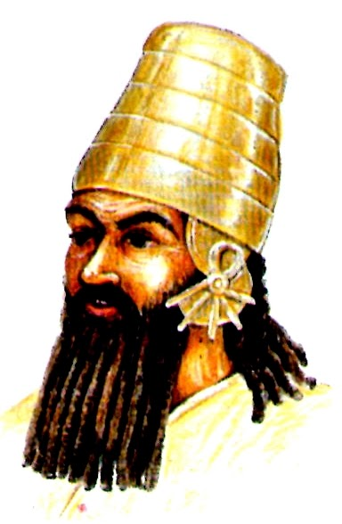

Rey Tudia

Tudia es considerado el primer rey de Asiria según la Crónica Real Asiria, aunque su existencia es más legendaria que histórica. Se le menciona como un gobernante que habitaba en tiendas, lo que sugiere que Asiria en ese momento era una sociedad seminómada. No hay registros detallados de sus acciones ni de su gobierno, y la historiografía moderna no lo reconoce como un monarca con impacto documentado.
Se dice que su sucesor fue Adamu, otro rey de la lista temprana de Asiria, pero al igual que Tudia, su historia está envuelta en incertidumbre. Estos primeros reyes reflejan una etapa de formación de Asiria antes de convertirse en el poderoso imperio que dominaría Mesopotamia siglos después.
Su existencia es más LEGENDARIA que documentada, pero su papel como el primer rey de Asiria lo convierte en una figura clave en la tradición histórica. Se le menciona en la Lista de Reyes Asirios como parte de los "reyes que vivían en tiendas", lo que sugiere que Asiria en ese momento era una sociedad seminómada, aún en proceso de consolidación como un reino estructurado.
- Primer rey legendario – Aunque se le menciona como el primer rey de Asiria, no hay registros históricos detallados sobre su gobierno. Su existencia es más mítica que documentada.
- Reyes en tiendas – Se le describe como uno de los "reyes que habitaban en tiendas", lo que sugiere que Asiria en ese momento era una sociedad seminómada, sin una capital establecida.
- Sucesión incierta – Se dice que su sucesor fue Adamu, pero al igual que Tudia, su historia está envuelta en incertidumbre y falta de evidencia arqueológica.
- Orígenes de Asiria – Su inclusión en la Lista de Reyes Asirios indica que los asirios posteriores lo consideraban el fundador mítico de su linaje, aunque su impacto real en la formación del reino es desconocido.